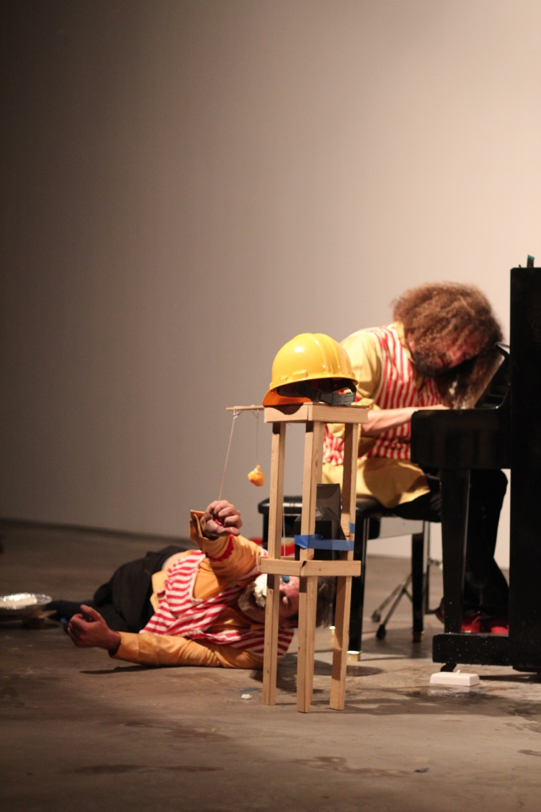
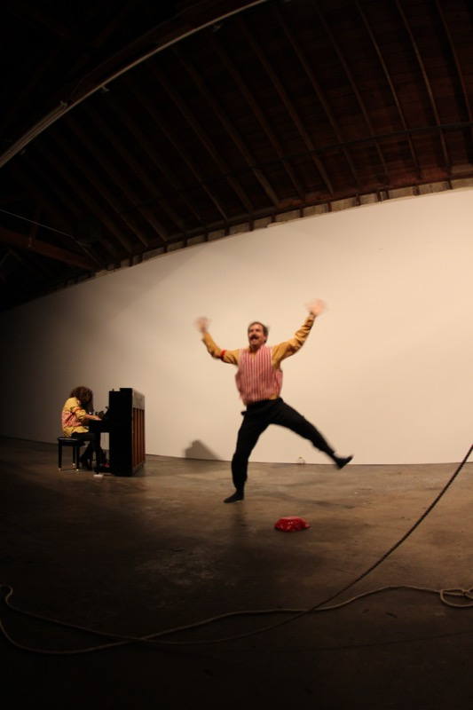
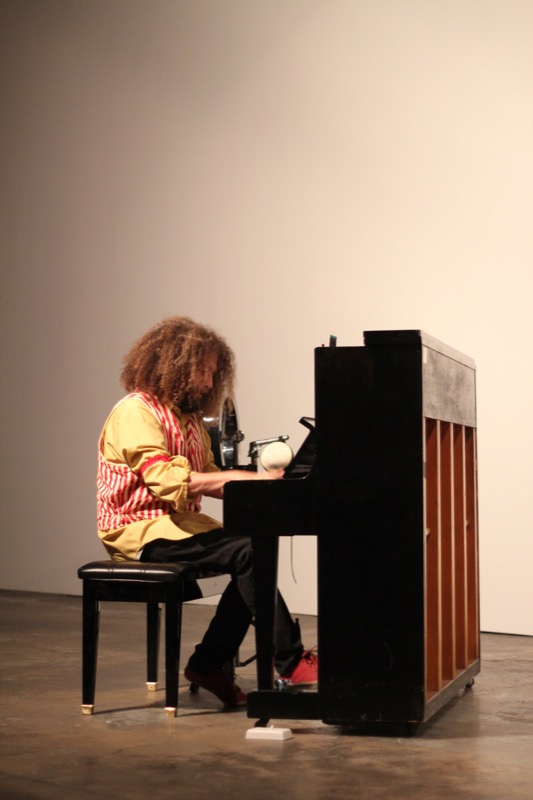
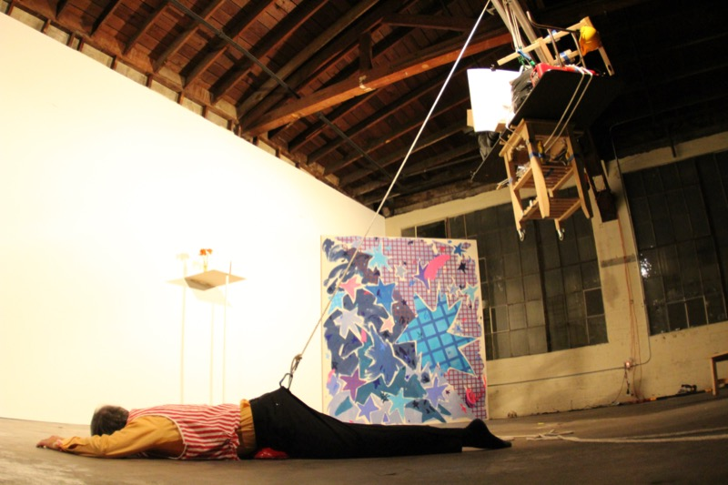
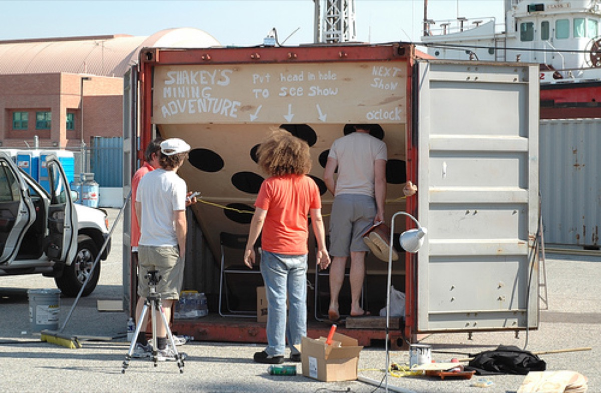
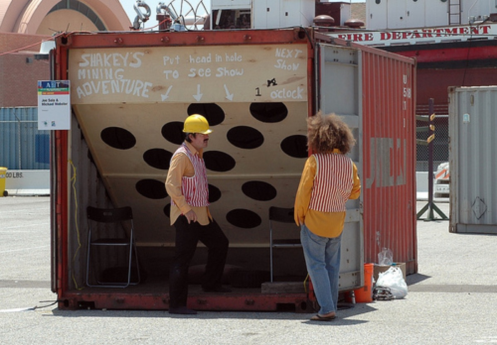

A performance collaboration with artist Joe Sola, ongoing since 2006. Combining comedy, art historical critique, and slapstick silent-movie gestures, Shakey’s performances are choreographed pieces involving props, sculpture, drawing, music, and occasional destruction. Reviewed in Artforum and BOMB Magazine.
Der Hintern in Der Luft




Shakey’s at LACE
Shakey’s Mining Adventure


Also performed at
- Bananas at the Hammer — Billy Wilder Theatre, Hammer Museum, October 30, 2007
- Happy Lion Gallery, Los Angeles